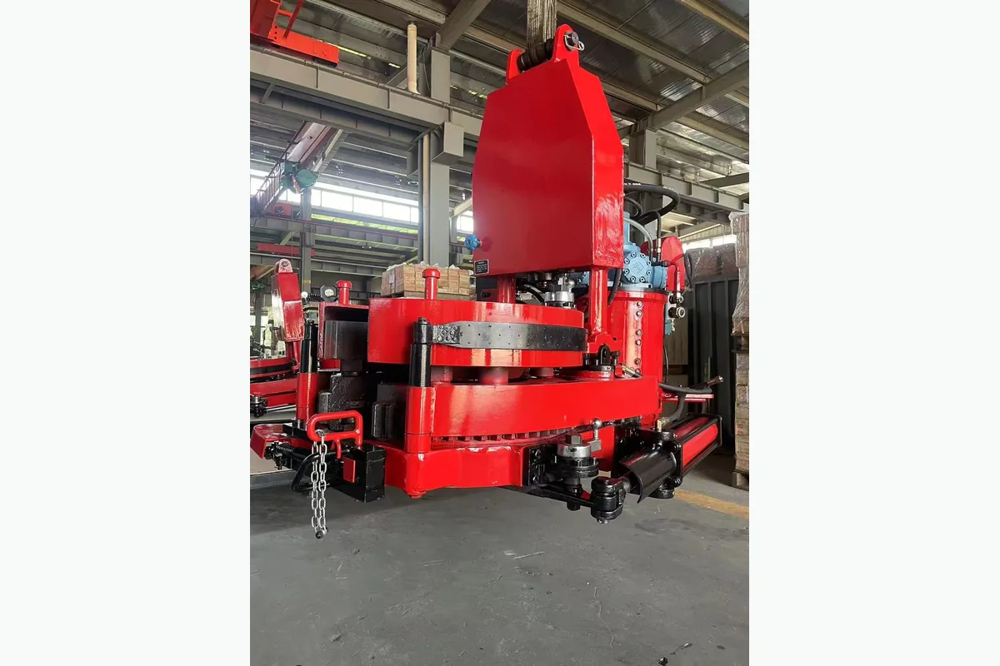
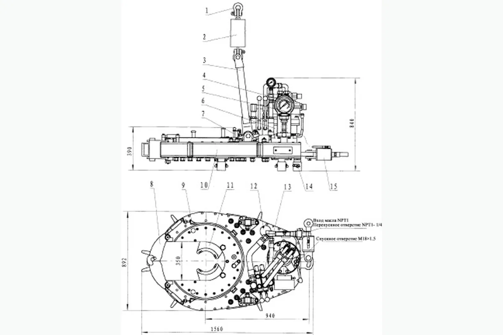

How to Request a Quotation
- Send part number or equipment model.
- Attach product photo or technical drawing if available.
- We will check compatibility and prepare quotation details.
Wellhead Tools
Wellhead Tools. TQ Series Drilling Hydraulic Tong for oilfield equipment maintenance and replacement projects. Buyers can send part number, equipment model, product photo or technical drawing for quotation.

TQ Series Drilling Hydraulic Tong for oilfield equipment maintenance and replacement projects. Buyers can send part number, equipment model, product photo or technical drawing for quotation.
Specification matching, export packaging, WhatsApp and email communication support for oilfield buyers.
Description
Images marked as description materials are placed here and are not used as the product card thumbnail.


Specifications
If the original product folder includes a model or specification table, it is displayed here for product selection and quotation support.
| Model | TQ178-16 | TQ178-16Y | TQ340-35 | TQ340-35Y | TQ356-55 | TQ356-55Y | |||
|---|---|---|---|---|---|---|---|---|---|
| Диапазон Sizeов | Мм | 101,6 ~ 178 | 101,6 ~ 178 | 114,3 ~ 340 | 114,3 ~ 340 | 114,3 ~ 356 | 114,3 ~ 356 | ||
| В | 41/2 ~ 133/8 | 41/2 ~ 133/8 | 41/2 ~ 133/8 | 41/2 ~ 133/8 | 41/2 ~ 14 | 41/2 ~ 14 | |||
| Максимум. Давление | МПа | 18 | 16 | 18 | 20 | 16,6 | 20 | ||
| PSI | 2610 | 2320 | 2610 | 2900 | 2400 | 2900 | |||
| Работа потока | Л/мин | 110 ~ 160 | 110 ~ 160 | 110 ~ 160 | 110 ~ 170 | 110 ~ 140 | 110 ~ 170 | ||
| Галлонов в минуту | 29,3 ~ 42,7 | 29,3 ~ 42,7 | 29,3 ~ 42,7 | 29,3 ~ 45,4 | 29,3 ~ 37,3 | 29,3 ~ 45,4 | |||
| Давление воздуха | МПа | 0,5 ~ 0,9 | - | 0,5 ~ 0,9 | - | 0,5 ~ 0,9 | - | ||
| PSI | 72 ~ 130 | 72 ~ 130 | 72 ~ 130 | ||||||
| Макс. | Привет. снаряжение | КН. м | 2,4 ~ 3 | 2,4 ~ 3 | 2,5 ~ 3 | 3,5 ~ 6 | 3,8 ~ 4,2 | 7 | |
| Крутящий момент | Футовые фунты | 1770 ~ 2210 | 1770 ~ 2210 | 1844 ~ 2210 | 2580 ~ 4425 | 2800 ~ 3100 | 5160 | ||
| Середина. шестерня | КН. м | - | - | 6,0 ~ 7,5 | - | - | - | ||
| Футовые фунты | 4425 ~ 5530 | ||||||||
| Низкая передача | КН. м | 14,5 ~ 17,5 | 16 ~ 19 | 32 ~ 40 | 22 ~ 37 | 53 ~ 58 | 57 | ||
| Футовые фунты | 10694 ~ 12900 | 11060 ~ 13270 | 23600 ~ 29500 | 16225 ~ 27285 | 39080 ~ 42775 | 42030 | |||
| Скорость | Привет. снаряжение | Обороты | 54 ~ 79 | 50 ~ 72 | 60 ~ 86 | 50 ~ 90 | 56 ~ 70 | 39,4 ~ 60,9 | |
| Середина. шестерня | Обороты | - | - | 21 ~ 30 | - | - | - | ||
| Низкая передача | Обороты | 9 ~ 13,1 | 9 ~ 13 | 3,6 ~ 5,3 | 8 ~ 14 | 4 ~ 5 | 4,8 ~ 7,4 | ||
| Расстояние подъема | Мм | - | - | - | 622 | - | 615 | ||
| В | 24,5 | 24,2 | |||||||
| Размер | Мм | 1450 × 760 | 1500 × 760 | 1580 × 900 | 1580 × 900 | 1770 × 960 | 1770 × 960 | ||
| × 740 | × 800 | × 880 | × 1060 | × 850 | × 780 | ||||
| В | 57 × 30 | 59 × 30 | 62,2 × 35,4 | 62,2 × 35,4 | 69,7 × 37,8 | 69,7 × 37,8 | |||
| × 29,1 | × 34,6 | × 34,6 | × 34,6 | × 33,5 | × 30,7 | ||||
| Вес | Кг | 580 | 560 | 780 | 760 | 1150 | 1100 | ||
| LB | 1280 | 1230 | 1720 | 1670 | 2530 | 2420 |
Inquiry
For fast quotation, send part number, pump model, rig model, product photo or technical drawing.